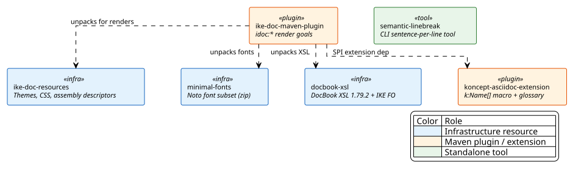
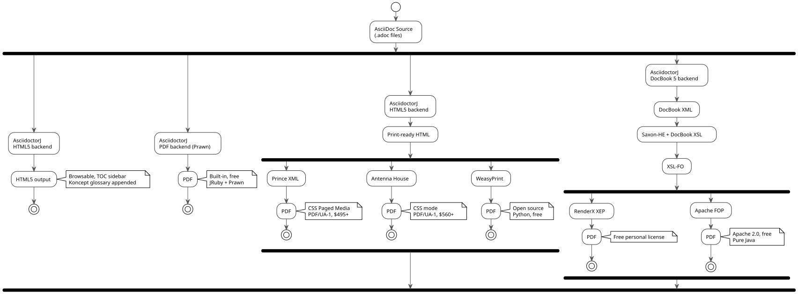

IKE Docs
IKE Docs 89-SNAPSHOT
IKE Documentation Pipeline

ike-docs is the documentation-plumbing reactor for the IKE Network. It produces the artifacts that doc-only and hybrid (Java-plus-docs) consumers exercise through ike-parent (which lives in ike-platform): the idoc:* Maven plugin, the Koncept AsciiDoc extension, fonts, DocBook XSL stylesheets, shared rendering resources, and a semantic linebreak reformatter.
Split from the archived ike-pipeline monolith in IKE-Network/ike-issues#216; custom-packaging machinery further retired in IKE-Network/ike-issues#321 in favor of a classifier-canonical doc shape.
Module Architecture

ike-doc-maven-plugin is the consumer-facing entry point — external doc projects declare it (or rather, declare it indirectly through ike-parent’s `<pluginManagement>) and invoke idoc:* goals. The other modules are infrastructure artifacts the plugin unpacks at build time, plus a standalone CLI tool.
The reactor itself is not consumed as an aggregator — ike-parent lives in ike-platform, not here, so external projects do not inherit from ike-docs/pom.xml. This reactor exists only to coordinate the build and release cadence of the ike-docs artifacts.
Rendering Pipelines
All renderers start from the same AsciiDoc source. The pipeline splits into three families based on how intermediate formats reach the final PDF.

Render selection is property-driven: every backend is gated by a -Dike.pdf.<name>=true toggle. Multiple backends activate concurrently; consumers compare output across renderers without rebuilding.
Quick Start
Build the entire reactor with HTML output (default):
mvn clean verifyBuild with the Prawn PDF backend:
mvn clean verify -Dike.pdf.prawnBuild a single module:
mvn clean install -pl ike-doc-maven-plugin -amFor consumer-side authoring (a project inheriting ike-parent that uses these artifacts), see the Getting Started[2] guide.
Module Inventory
| Module | Purpose | Packaging |
|---|---|---|
ike-doc-resources |
Shared doc-build resources: Asciidoctor themes, FO/CSS print templates, assembly descriptors (including the adoc.xml source-classifier descriptor consumed by ike-parent’s `doc-pipeline profile), shared docinfo. |
jar |
minimal-fonts |
Noto font subset (NotoSerif, NotoSans, NotoSansMono, math, symbols) packaged as a zip artifact for consistent PDF rendering across machines. | pom (zip) |
docbook-xsl |
DocBook XSL 1.79.2 stylesheets plus IKE’s FO customization layer. Enables the DocBook → XSL-FO → XEP/FOP rendering family. | jar |
koncept-asciidoc-extension |
AsciidoctorJ SPI extension providing the k:Name[] inline macro for formally identified terminology concepts. Renders SVG badges (HTML/PDF), DocBook phrases (XSL-FO), or plain text (Prawn). Auto-generates a glossary section with definitions, description-logic axioms, SNOMED CT identifiers, and OWL IRIs. |
jar |
ike-doc-maven-plugin |
The idoc:* goal prefix — AsciiDoc rendering, multi-renderer PDF wrappers, DocBook XSL patching, breadcrumb injection, renderer log scanning. Regular Maven plugin (no <extensions>true</extensions>). Plugin reference[3]. |
maven-plugin |
semantic-linebreak |
Standalone CLI: reformats AsciiDoc prose to one-sentence-per- line (semantic linefeed). Cleaner git diffs, easier review. | jar |
Release Position
ike-tooling -> [ike-docs] -> ike-platform -> { doc-example, project-example, integration-tests-example } -> workspace-reactor-example
-> ike-lab-documentsike-docs releases after ike-tooling (which provides ike-maven-plugin for release orchestration) and before ike-platform (which declares ike-doc-maven-plugin and the other ike-docs artifacts in ike-parent’s `<pluginManagement>/<dependencyManagement>).
Key Design Decisions
- Property-driven renderer toggles
-
Every PDF backend is a thin profile that flips an
ike.skip.*property fromtruetofalse. Renderers compose: activate several at once with-Dike.pdf.prawn -Dike.pdf.prince. The configuration lives inike-parent(inike-platform), which inheriting projects pick up automatically. - Artifact-based resource sharing
-
The infrastructure modules (
ike-doc-resources,minimal-fonts,docbook-xsl) are packaged as deployable Maven artifacts and unpacked into each consumer’starget/at build time. No checked-in copies; everything is regenerated per build. - Classifier-canonical doc artifacts
-
Doc payloads ship as
<classifier>adoc</classifier><type>zip</type>attachments on<packaging>pom</packaging>(doc-only) or<packaging>jar</packaging>(hybrid) primaries. This replaces the retired<packaging>ike-doc</packaging>custom type; seedev-classifier-canonical-doc-shapeinike-lab-documents/topics/andIKE-Network/ike-issues#321for the full design rationale. - Koncept markup
-
The
k:ConceptName[]inline macro renders as an SVG badge linking to an auto-generated glossary section. Definitions are sourced from YAML files and include natural-language definitions, description-logic axioms, SNOMED CT identifiers, and OWL IRIs. - Semantic linebreaks
-
The
semantic-linebreaktool reformats AsciiDoc prose to one-sentence-per-line. This produces cleanergit diffoutput and makes sentence-level review practical.
The IKE foundation
ike-docs is one of four foundation projects published to Maven Central. Together they form the parent-inheritance forest that every IKE project builds on:
- ike-base-parent[4] — Tier 0 foundation parent POM; shared publishing metadata and signing config.
- ike-tooling[5] — Maven plugins for release orchestration and workspace management.
- ike-docs[6] — the AsciiDoc documentation pipeline and
idoc:*plugin. - ike-platform[7] — the consumer-facing
ike-parent, the BOM, and thews:*plugin.
Resources
| Resource | URL |
|---|---|
| GitHub | https://github.com/IKE-Network/ike-docs[8] |
| Issues | https://github.com/IKE-Network/ike-issues[9] |
| Nexus Artifacts | https://nexus.tinkar.org[10] |
| IKE Network | https://ike.network[11] |